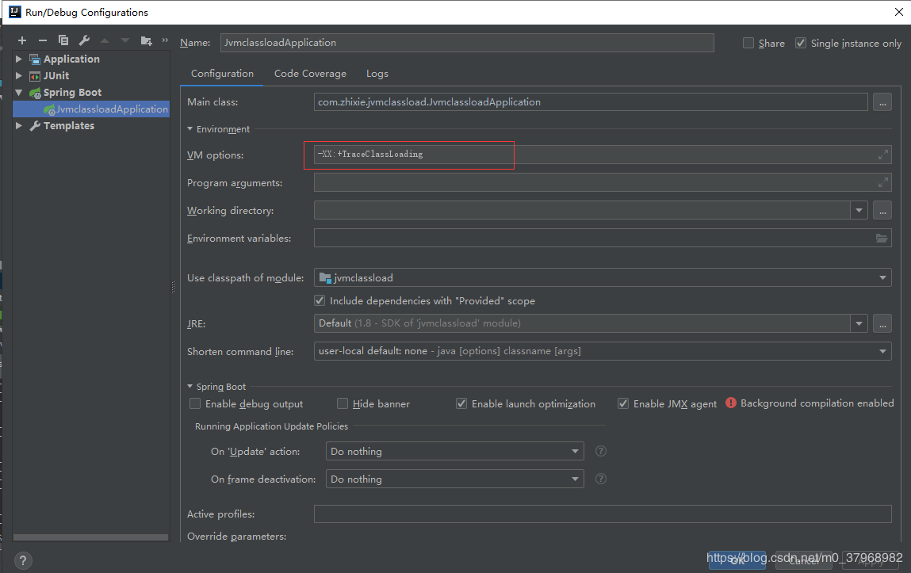
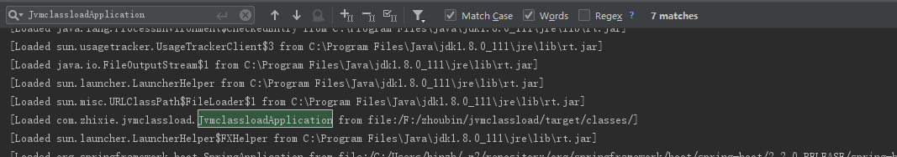
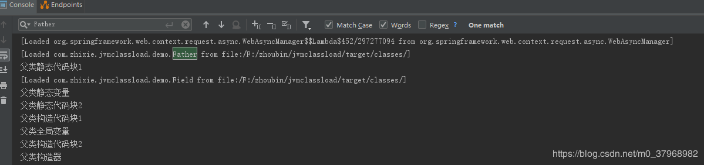
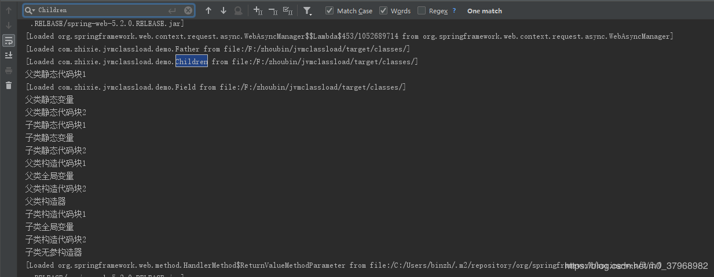
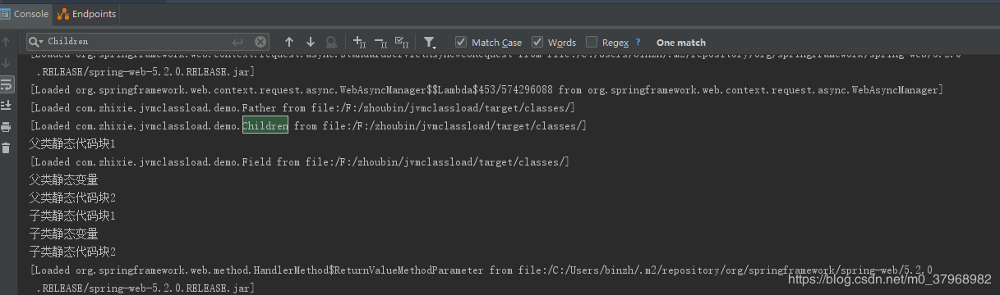
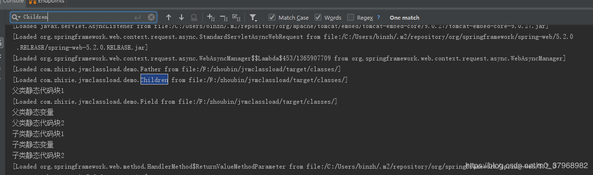
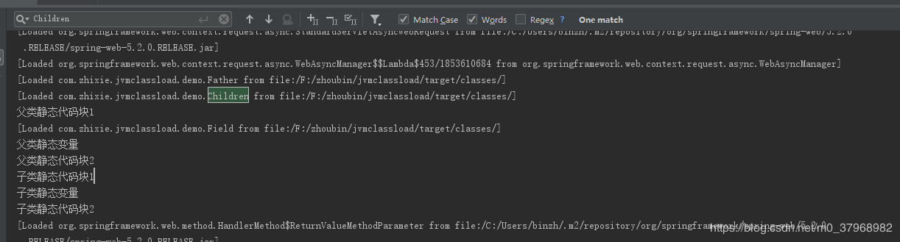

我们接着上一章的代码继续来了解一下java类是在什么时候加载的。在开始验证之前，我们现在IDEA做如下配置。
-XX:+TraceClassLoading 监控类的加载

我们新建了一个TestController 来测试类的加载时机，代码如下：
@RestController
public class TestController {
@RequestMapping("/newInstance")
public String newInstance(){
Father father = new Father();
return "";
}
@RequestMapping("/newChildrenInstance")
public String childrenInstance(){
Children children = new Children();
return "";
}
@RequestMapping("/staticField")
public String staticField(){
String staticValue = Children.staticValue;
return "";
}
@RequestMapping("staticMethod")
public String staticMethod(){
String bed = Children.bed();
return "";
}
@RequestMapping("classForName")
public String classForName() throws Exception {
Class.forName("com.zhixie.jvmclassload.demo.Children");
return "";
}
}本次验证采用的是springboot 2.2.0版本。当运行启动类的时候，我们可以看到只有启动类被加载了。


此时被加载的类有Father及Field类，我们重启服务，然后去访问创建子类的实例。为什么要重启呢？因为每个类在虚拟机生命周期中如果存在，则不会重复加载。不重启的话，看不到我们想要的效果。

在创建子类实例的时候，在加载子类之前会优先加载其父类。



在初始化某个类时，如果这个类的静态代码块、静态方法或静态变量引用到了另一个类，则这个类也会被加载。
如果文章对您有帮助，请记得点赞关注哟~
欢迎大家关注我的公众号<情系IT>，每日技术推送文章供大家学习参考。